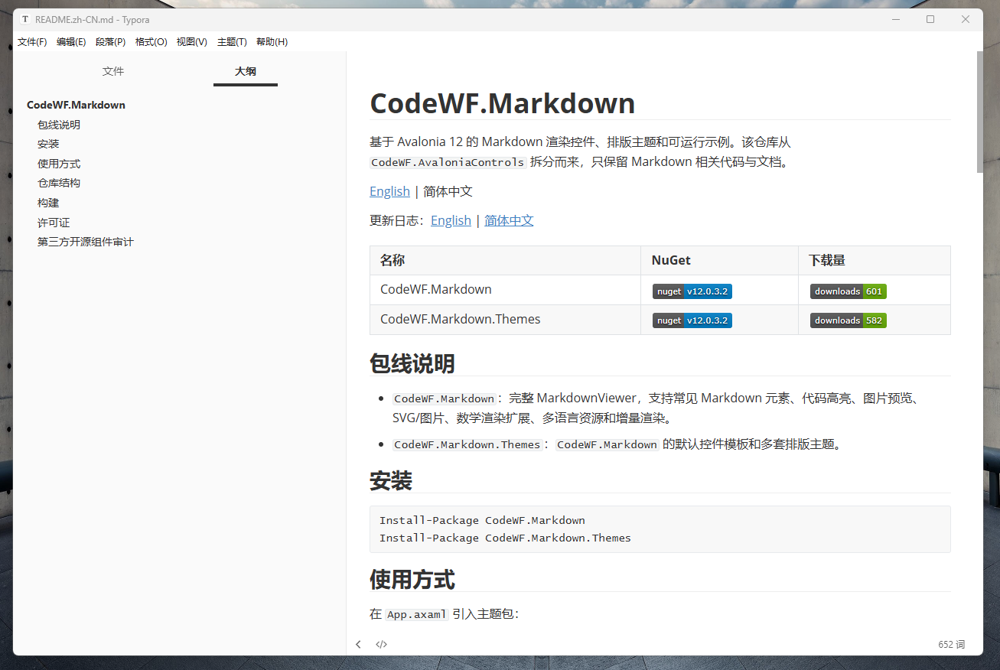
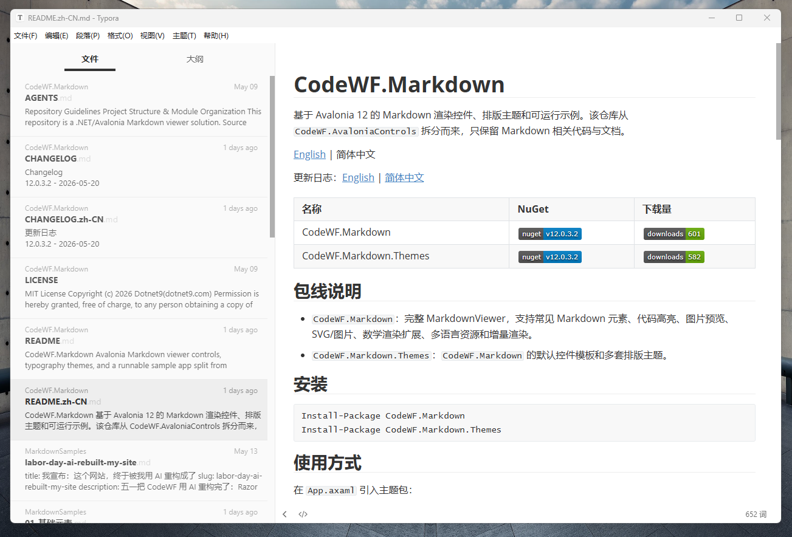
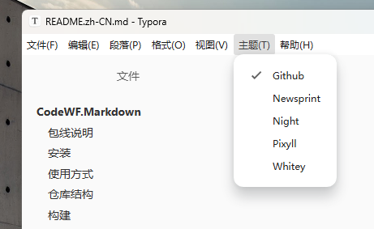

维刻 Vex v1.3.0
极简之力，妙笔成章
跨平台 Markdown 编辑器：实时预览、多格式导出、一键复制公众号/知乎/掘金富文本，内置 AI MCP Server。
WindowsmacOS
Avalonia 12.NET 11开源免费
GitHub Star ★ 1.2k
最近发布 10-02
内置 自动更新
EXPLORER
▲ 实施时替换为仓库 docs/ 中的真实截图与演示 GIF（此处为 CSS 示意）



核心特性
Features📝
编辑 + 实时预览AvaloniaEdit 源码编辑，左侧写右侧看，大纲导航与文档统计随手可得。
📤
多格式导出HTML / PDF / PNG 长图 / Word 一键导出，分享不再折腾格式。
📋
社交平台排版复制为微信公众号、知乎、掘金富 HTML，排版主题直接带走。
📂
文件夹工作流打开目录即列出文档，外部变更自动检测，长篇项目好管理。
🎨
明暗与排版主题浅色深色界面 + 多套排版主题，写作环境与成稿风格都能定制。
🤖
内置 MCP Server本机 MCP 服务让 AI 客户端读写、预览当前文档，人机协作写作。
1
下载安装从下载中心获取对应平台安装包，内置自动更新，装完即用。
2
打开或新建打开单个 Markdown 文件或整个文件夹，左侧编辑右侧实时预览。
3
导出分享导出 PDF/长图/Word，或一键复制为公众号、知乎、掘金富文本。
文档
Documentationv1.3.0UI 全面改版对齐设计原型；MCP 工具调用新增确认记忆机制；修复 AOT 发布问题
v1.1.4新增知乎/掘金排版主题；修复外部文件变更检测在 Windows 网络盘的误报
v1.1.0内置本机 MCP Server（127.0.0.1:17891，Bearer Token 鉴权）；四语言界面
基于这些开源库
Built With码坊自研组件支撑自家应用，应用反哺组件迭代
💬 评论区（giscus，基于 GitHub Discussions）
实施时在此加载，读者可用 GitHub 账号反馈文档问题
实施时在此加载，读者可用 GitHub 账号反馈文档问题